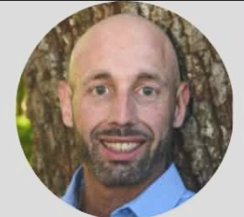

Sam Desmond Schulman
PhD Student, Integrative Biology
Shi Lab · Department of Biological Sciences · LSU New Orleans
About
I'm Sam Desmond Schulman, a PhD student studying the biology of aging in the nematode Caenorhabditis elegans. My dissertation asks how metabolism trades off against survival when animals face sudden temperature stress. I focus on the glyoxylate-shunt gene icl-1 and on trehalose, a sugar that helps cells withstand stress. I measure lifespan, healthspan and fat stores, and I'm adding untargeted metabolomics to see which metabolic pathways shift.
I came to science by a non-traditional route, after years working in construction and food service. I earned my B.S. in Molecular Biology at the University of New Orleans and stayed on for my PhD, where I work with Dr. Cheng Shi.
Highlights
AGE VOYAGER Training Award
Training award from the American Aging Association supporting my research training in aging biology.
EMBL-EBI metabolomics training
Selected as one of 30 researchers worldwide for advanced metabolomics training at Hinxton, UK (2026).
Open fat-quantification tools
Python and CellProfiler tools for measuring fat stores in C. elegans. See the software.
Contact
Department of Biological Sciences, LSU New Orleans, New Orleans, Louisiana
sdschulm@uno.edu